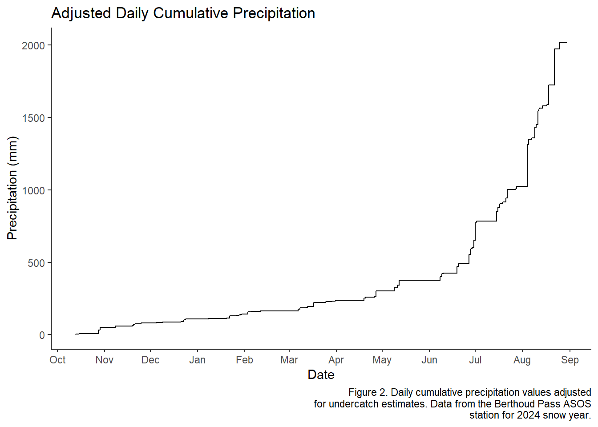

Chapter 3 Assignment 5 Undercatch
The objectives of this assignment are as follows: b. determine snowfall (and mixed precipitation) undercatch and correct precipitation for undercatch, and c. determine how much precipitation falls as snow using various assumptions.
- Trace Precipitation Events: Determine the cumulative hourly precipitation (in mm) excluding trace events and considering trace events. State the quantity of precipitation assumed to occur for each trace event. Plot the two (without and with trace events) cumulative curves versus time. Not all stations record trace events. If this is the case, state that there are no trace events.
There are no trace events recorded at this SNOTEL station.
- Precipitation Undercatch Correction: Using the hourly precipitation including trace events, determine the cumulative hourly precipitation (in mm) before and after correcting for wind undercatch. Use 0oC as the threshold for snow to fall, and allow mixed precipitation for air temperatures from 0 to 3oC. State an assumption for the catch efficiency for rain. Plot the two cumulative curves versus time.
asos_hourly <- read.csv("Data/asosclean.csv")
asos_undercatch <- asos_hourly %>%
mutate(Date = date(Date)) %>%
ungroup() %>%
filter(Date >= "2023-10-13") %>%
mutate(precip_type = case_when(tmpc < 0 ~ "snow",
tmpc >= 0 & tmpc <= 3 ~ "mixed",
tmpc > 3 ~ "rain"),
undercatch = case_when(precip_type == "snow" ~ exp(-0.04*sms^1.75),
precip_type == "mixed" ~ (1.0104 - (0.0562 * sms)),
precip_type == "rain" ~ (1 * sms)),
adj_precip = ifelse(p01mm == 0, 0, p01mm + (p01mm * undercatch)), #mm
undercatch_loss = adj_precip - p01mm, #mm
cum_undercatch_loss = cumsum(replace_na(undercatch_loss, 0))) #mm##Visualization
ggplot(asos_undercatch)+
geom_line(aes(x = Date, y = cum_undercatch_loss))+
labs(
x = "Date",
y = "Precipitation (mm)",
title = "Adjusted Daily Cumulative Precipitation",
caption = str_wrap("Figure 2. Daily cumulative precipitation values adjusted for undercatch estimates. Data from the Berthoud Pass ASOS station for 2024 snow year.", width = 60)
)+
scale_x_date(date_breaks = "1 months", date_labels = "%b")+
theme(
plot.caption = element_text(hjust = 0.5, size = 10),
plot.caption.position = "plot")+
theme_classic()